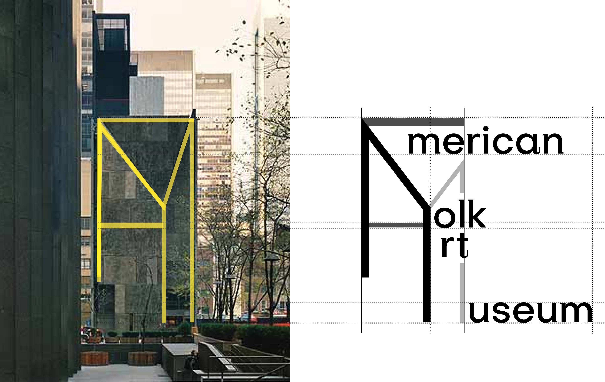

WORK
ABOUT
CONTACT
AMERICAN FOLK ART MUSEUM
2019
Brand Identity, Motion
This is a rebranding project for American Folk Art Museum located in New York. The logo represents the exterior of the museum building.
